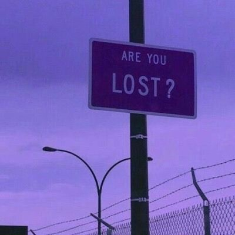
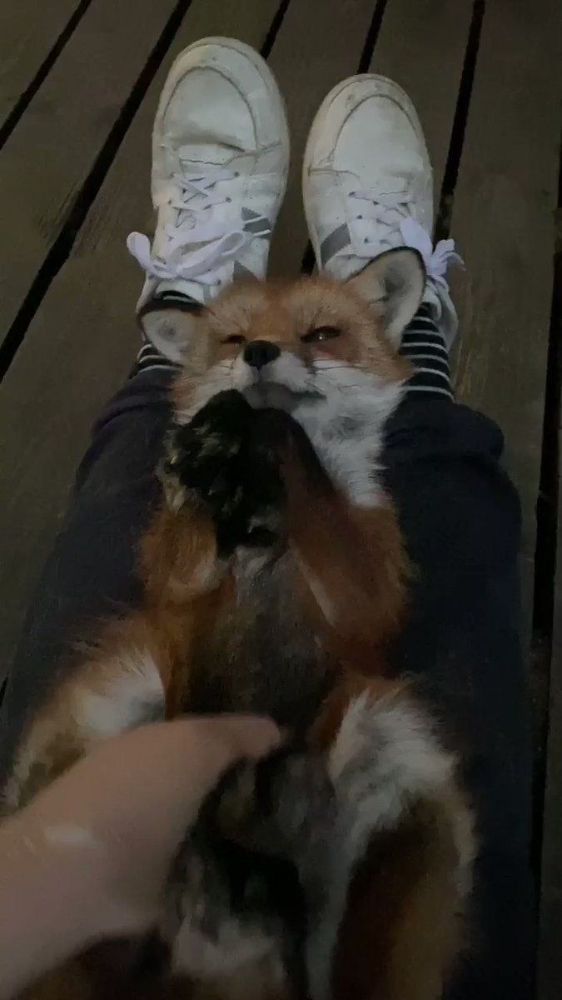
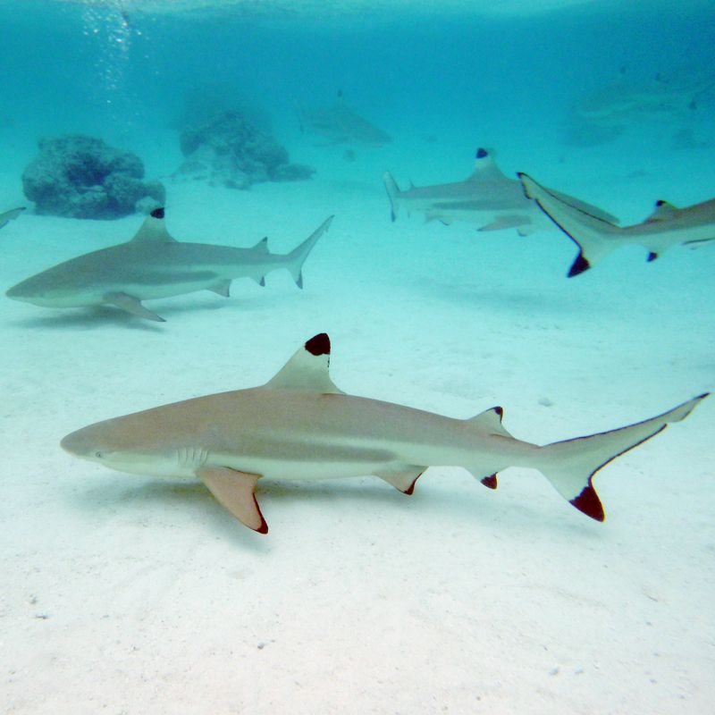
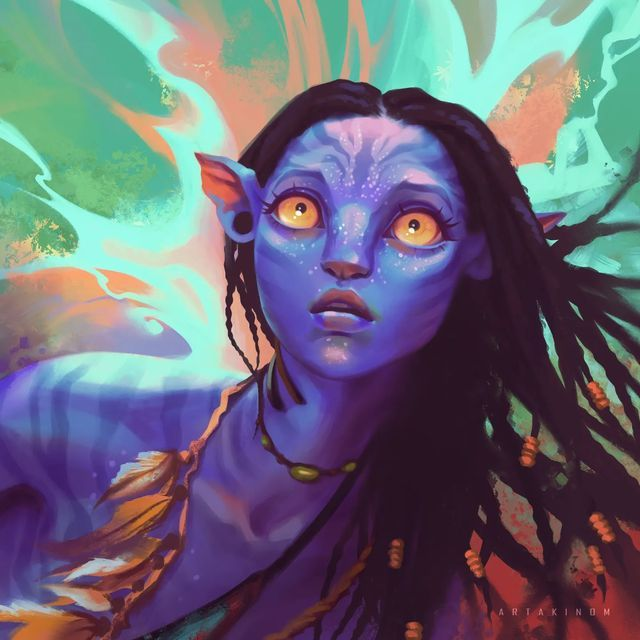

"And into the forest i go, to lose my mind and my soul."

Pinterest finds
Pinterest is a visual discovery platform where people collect, organize, and share ideas through images and short videos, called Pins. Users can save these Pins to themed boards—like fashion inspiration, home décor, recipes, travel plans, or creative projects—essentially turning Pinterest into a digital scrapbook or mood board.
Unlike most social media platforms, Pinterest focuses less on real-time updates and more on inspiration and planning. People often use it as a search engine for creative ideas, whether they’re looking for DIY tutorials, style trends, or meal prep guides. Its algorithm recommends content based on your interests and saved Pins, which makes it highly personalized.
Platforms "like Pinterest"—such as Instagram (for visual sharing), Tumblr (for aesthetic blogging), or even TikTok (for short, creative content)—serve overlapping purposes, but Pinterest stands out as being more about curation and planning than social interaction.

Sharkies
The blacktip reef shark (Carcharhinus melanopterus) is a small, agile shark that lives in shallow, tropical coral reefs across the Indo-Pacific region. It’s easy to recognize by the distinct black tips on its fins, especially the dorsal fin, which often breaks the surface as the shark swims in very shallow waters.
Growing up to about 1.5–1.8 meters (5–6 feet) in length, the blacktip reef shark is not considered dangerous to humans. They are generally shy, though they may display curiosity if approached by divers or snorkelers. Their diet mainly consists of small fish, squid, and crustaceans, making them important predators in maintaining reef ecosystem balance.
Unlike some larger shark species, blacktip reef sharks rarely travel far; they tend to stay close to their home reefs. They are also viviparous, meaning they give birth to live young, usually 2–5 pups at a time.
Unfortunately, these sharks face threats from overfishing, bycatch, and habitat loss, leading to their classification as Near Threatened by the IUCN. They play a crucial role in reef health, so conserving them helps protect entire marine ecosystems.

Avatar
Avatar is James Cameron’s epic science fiction film universe, beginning with the 2009 blockbuster and followed by its sequels.
The story takes place on Pandora, a lush alien moon inhabited by the Na’vi—tall, blue-skinned humanoids who live in harmony with nature and a spiritual force called Eywa. Humans arrive on Pandora to mine a rare mineral, unobtanium, sparking conflict between industrial exploitation and the Na’vi’s way of life. Through the Avatar Program, human minds are linked to genetically engineered Na’vi bodies, allowing them to explore Pandora’s environment. The protagonist, Jake Sully, enters this world and ultimately sides with the Na’vi against human greed.
The film is praised for its groundbreaking visual effects and worldbuilding, creating a fully immersive alien ecosystem with floating mountains, glowing forests, and exotic creatures. It also explores themes of colonialism, environmentalism, and cultural respect, echoing real-world struggles between indigenous peoples and industrial powers.
Its sequels, starting with Avatar: The Way of Water (2022), expand on Pandora’s cultures and environments, particularly the ocean clans, while continuing the story of Jake, Neytiri, and their family.

Ready player one
The Ready Player One books by Ernest Cline (Ready Player One and its sequel Ready Player Two) are fast-paced science fiction adventures that dive into the intersection of virtual reality, pop culture, and human connection.
The first novel introduces the OASIS, a massive virtual universe where people escape the bleak realities of a dystopian world. When its creator dies, he leaves behind a puzzle-hunt for control of the OASIS, filled with challenges inspired by 1980s games, movies, and music. Wade Watts, a young gamer, takes on the quest, facing not just riddles and trials but also ruthless corporate competitors.
The sequel, Ready Player Two, expands the stakes by introducing new technology that allows users to experience the OASIS more deeply, blurring the line between reality and simulation. Once again, Wade and his friends are forced into a high-stakes hunt that challenges their morality, relationships, and sense of identity.
Both books explore themes of nostalgia, escapism, friendship, and the dangers of technology when it becomes too intertwined with human life.